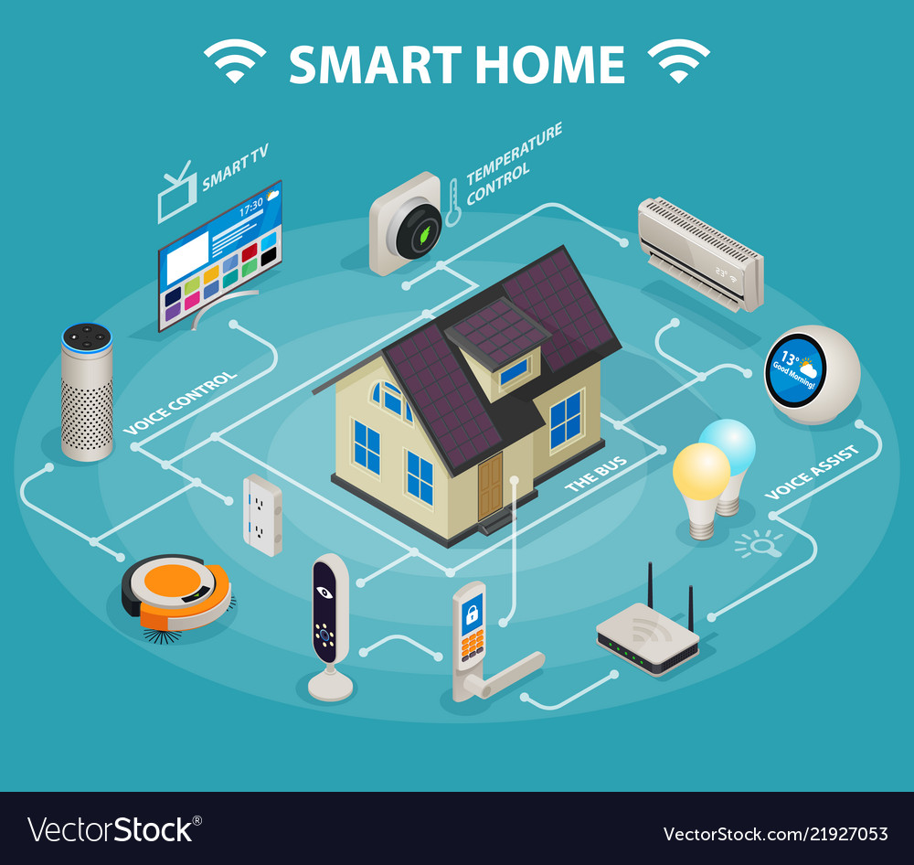
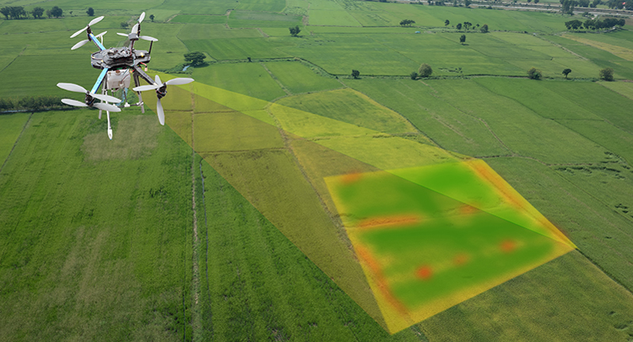

Internet of things
The most important features of IoT include artificial intelligence, connectivity, sensors, active
engagement, and small device use. A brief review of these features is given below −
• AI − IoT essentially makes virtually anything “smart”, meaning it enhances every aspect
of life with the power of data collection, artificial intelligence algorithms, and networks.
This can mean something as simple as enhancing your refrigerator and cabinets to detect
when milk and your favorite cereal run low, and to then place an order with your preferred
grocer.
What is IoT?
The description of the Internet of Things is related to different definitions used by several groups
for promoting the particular concept in the whole world.
➢ According to the Internet Architecture Board’s (IAB) definition, IoT is the networking of
smart objects, meaning a huge number of devices intelligently communicating in the
presence of internet protocol that cannot be directly operated by human beings but exist as
components in buildings, vehicles or the environment.
VIDEO
Architecture of IoT
The architecture of IoT devices comprises four
major components: sensing, network, data processing, and application layers
Figure 1 of Iot Architecture 1. Sensing Layer - The main purpose of
the sensing layer is to identify any
phenomena in the devices’ peripheral
and obtain data from the real world.
This layer consists of several sensors.
Using multiple sensors for applications
is one of the primary features of IoT
devices. Sensors in IoT devices are
usually integrated through sensor hubs.2. Network Layer - The network layer acts as a communication channel to transfer data, collected
in the sensing layer, to other connected devices. In IoT devices, the network layer is
implemented by using diverse communication technologies (e.g., Wi-Fi, Bluetooth, Zigbee, ZWave, LoRa, cellular network, etc.) to allow data flow between other devices within the same
network. 3. Data Processing Layer - The data processing layer consists of the main data processing unit
of IoT devices. The data processing layer takes data collected in the sensing layer and analyses
the data to make decisions based on the result. In some IoT devices (e.g., smartwatch, smart
home hub, etc.), the data processing layer also saves the result of the previous analysis to
improve the user experience. This layer may share the result of data processing with other
connected devices via the network layer. 4. Application Layer - The application layer implements and presents the results of the data
processing layer to accomplish disparate applications of IoT devices. The application layer is a
user-centric layer that executes various tasks for the users. There exist diverse IoT applications,
which include smart transportation, smart home, personal care, healthcare, etc.
IoT Based Smart Home
Smart Home initiative allows subscribers to remotely manage and monitor different home devices
ongoing development of mass-deployed broadband internet connectivity and wireless technology,
the concept of a Smart Home has become a reality where all devices are integrated and
interconnected via the wireless network. These “smart” devices have the potential to share
information with each other given the permanent availability to access the broadband internet
connection.• Remote Control Appliances : Switching on and off remotely appliances to avoid accidents
and save energy.• Weather : Displays outdoor weather conditions such as humidity, temperature, pressure,
wind speed and rain levels with the ability to transmit data over long distances.• Smart Home Appliances : Refrigerators with LCD screen telling what’s inside, food that’s
about to expire, ingredients you need to buy and with all the information available on a
smartphone app. Washing machines allowing you to monitor the laundry remotely, and
The kitchen ranges with the interface to a Smartphone app allowing remotely adjustable
temperature control and monitoring the oven’s self-cleaning feature.• Safety Monitoring : cameras, and home alarm systems making people feel safe in their
daily life at home.• Intrusion Detection Systems : Detection of window and door openings and violations to
prevent intruders.• Energy and Water Use : Energy and water supply consumption monitoring to obtain
advice on how to save cost and resources, & many more 
Classic smart home, internet of things, cloud computing and rule-based event processing,
are the building blocks of our proposed advanced smart home integrated compound.
Each component contributes its core attributes and technologies to the proposed composition.
IoT contributes the internet connection and remote management of mobile appliances, incorporated with a variety of sensors.
Sensors may be attached to home related appliances, such as air-conditioning, lights and other environmental devices.
And so, it embeds computer intelligence into home devices to provide ways to measure home conditions and monitor home appliances’ functionality.
Cloud computing provides scalable computing power, storage space and applications,
for developing, maintaining, running home services, and accessing home devices anywhere at anytime. VIDEO
IoT Based Smart City In cities, the development of smart grids, data analytics, and autonomous vehicles will provide an
intelligent platform to deliver innovations in energy management, traffic management, and
security, sharing the benefits of this technology throughout society.• Structural Health : Monitoring of vibrations and material conditions in buildings, bridges
and historical monuments.• Lightning : intelligent and weather adaptive lighting in street lights.• Safety : Digital video monitoring, fire control management, public announcement systems.• Transportation : Smart Roads and Intelligent High-ways with warning messages and
diversions according to climate conditions and unexpected events like accidents or traffic
jams.• Smart Parking : Real-time monitoring of parking spaces available in the city making
residents able to identify and reserve the closest available spaces,• Waste Management : Detection of rubbish levels in containers to optimize the trash
collection routes. Garbage cans and recycle bins with RFID tags allow the sanitation staff
to see when garbage has been put out. generally, VIDEO
IoT Based Smart Farming
Application of iot in smart farming
• Green Houses : Control micro-climate conditions to maximize the production of fruits and
vegetables and its quality.• Compost : Control of humidity and temperature levels in alfalfa, hay, straw, etc. to prevent
fungus and other microbial contaminants.• Animal Farming/Tracking : Location and identification of animals grazing in open
pastures or location in big stables, Study of ventilation and air quality in farms and
detection of harmful gases from excrements.• Offspring Care : Control of growing conditions of the offspring in animal farms to ensure
its survival and health.• Field Monitoring : Reducing spoilage and crop waste with better monitoring, accurate
ongoing data obtaining, and management of the agriculture fields, including better control
of fertilizing, electricity and watering.
Reference
Introduction to Emerging Technologies Course Module
® All Rights are reserved. 2021 G.C
.jpg)